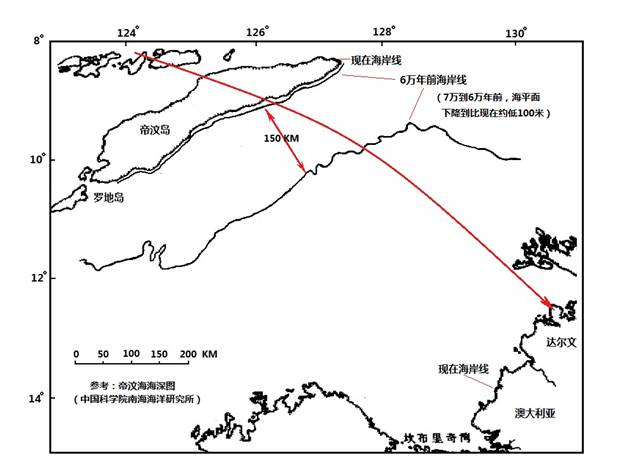
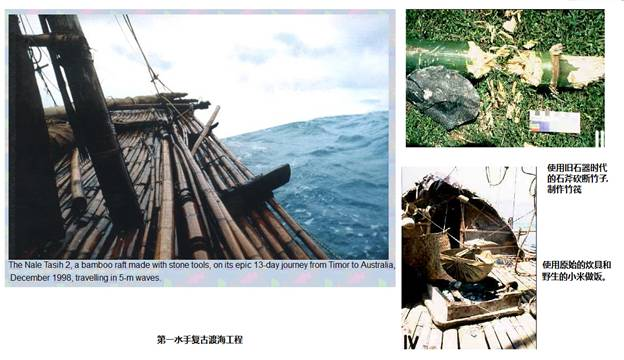
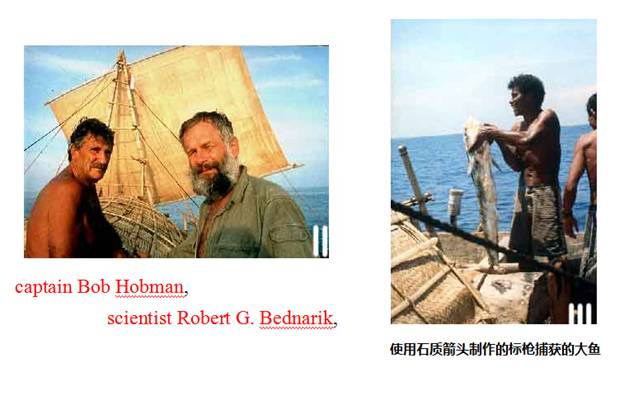
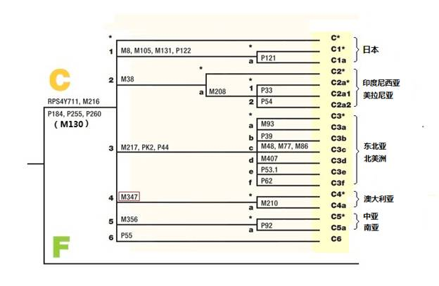
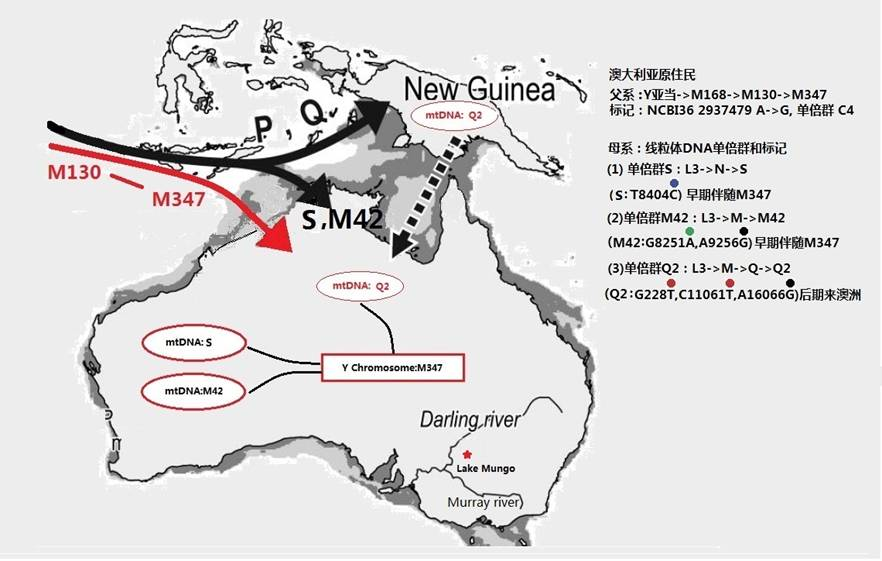

|
回主页
第2小节 神奇的澳大利亚之旅
一．没有猿猴的大陆
对于研究人类起源的学者来说，澳大利亚是一个非常奇特的土地，因为它是唯一没有“原住灵长类”的大洲。也就是说，澳大利亚在十七世纪欧洲人登陆澳大利亚之前，那里完全没有猴子和猩猩等类型的大型灵长类生活的痕迹，只是在欧洲人登陆之后，猴子和猩猩才出现在动物园中。在澳大利亚考古发掘中，也没有发现过类人猿、猴子和猩猩的骨骸。相反，在澳大利亚既有原住民，又有古人类的化石，无论如何，也不可能说他们是进化来的。
根据大陆漂移学说，澳 洲是从 1.3 亿 年 前与大陆分离的。这里虽然没有灵长类动物，却是“有袋动物”的天下，袋鼠 、袋熊、袋狼和袋虎成为了野生动物的主角。还有举世无双的鸭嘴兽（Ornithorhynchus anatinus）， 它虽然是哺乳动物， 却是下蛋生仔繁殖。澳大利亚古生物化石也是很奇特的，如双门齿兽（Diprotodon）的化石，表明当牠活着的时候，有身高达两米、体重近三吨的体型，这应该是在地球上生存过的最大有袋类动物了，另一个是“袋狮”化石，也是仅在澳大利亚生存过的奇特物种。
1770年4月29日，英国海军的努力号 (Endeavour) 三桅帆船，到达了澳大利亚东南海岸的肯奈尔半岛（Kurnell
Peninsula）。1770年8月21日，库克(Captain James Cook )船长郑重地宣布英国对整个澳大利亚东海岸的占领，并将其命名为“新南威尔士”。这个宣布并没有得到当地原住民的承认，他们以投掷标枪回复了库克船长。在以后的调查中，估计当时原住民的人口为31万八千到100万人之间，类似于现在澳大利亚人口的分布，他们大多数居住在东南部的沿海地区和墨累河（Murray
River）流域。
澳大利亚原住民并不比其他大陆上的古人类落后很多。他们有多种石器，有标枪、树皮船还有举世无双的“飞去来器”（Boomerang）。大约四、五千年前他们也进入了新石器时代，他们有装了木柄的石斧，有带倒钩的鱼叉和装有几十个燧石作成的小刀刃的标枪。可能是因为无法与其它地区的民族进行技术交流，他们始终没能进入铜器时代，也没有生产出其它地区常使用的弓箭。
澳大利亚从南到北许多地方，都有很多古人的岩画，那些流畅的线条图案，生动的人物和动物的形象，达到了相当高的绘画水平。考古学家利用现代的测年技术，确定位于北部的Arnhem Land Malakunanja II rock shelter岩洞中的岩画，采用的颜料已经历了5万多年的岁月[注释1]。他们虽然没有文字，但他们有大量口头流传的神话故事和关于祖先的传说。 在他们许许多多的部落中，有着严密的社会组织、婚姻制度和规则。每个部落都有自己的领地。他们不缺乏食品，身体也很健康，在欧洲人到达澳大利亚之前，一直在快乐地生活着。
他们来自哪里？这个问题困扰着考古学家已经有200百多年了。曾经有学者比较了澳大利亚古人类的化石，发现与中国“柳江人”的头骨化石十分相像。然而，仅仅是相像并不能确定他们的关系，就像很多刑事案件那样，最准确的判定，还得要靠DNA。本世纪初，最早的分子人类学研究目标就有澳大利亚的原住民。在DNA解码的面前，很轻易地就确定了他们是M168的后代、M130分支的子孙。这样准确的分析方法和清晰的结论，是以往靠骨骼比较和进化论的研究成果所不能比拟的。
下一个问题就是他们是什么时候到达澳大利亚的？鉴定人类的血统，DNA解码是非常准确的。但是，在年代问题上，要靠DNA解码就不是那么准确，这里就要依靠对骨头、石头的年代鉴定了。
二．芒湖（Lake Mungo）人
20世纪中期，考古学家在澳大利亚新南威尔士州的芒戈湖地区发现了三具人类的化石，将他们命名为芒戈湖1号（LM1）、芒戈湖2号（LM2）和芒戈湖3号（LM3）。芒戈湖1号是在1968年被发现的，推断它是一位女性遗骨，故她的另一个名字是芒戈湖夫人。芒戈湖3号是在1974年被发现的，推断它是一位男性遗骨，故他的另一个名字是芒戈湖男士。
关于他们生活年代的确定，不同的研究提供的结果有一定的差异。其中，采用钍—铀法（230Th/234U）测定芒戈湖3号的年代为62,000+/-6000年[注释2]。芒戈湖夫人生活的时代离我们较近，采用碳14测定法得出的结果为26,500至24,500年前。
这些骨骼表明他们都是古老的现代人，他们头颅和我们一样，有着前额高挺圆润的形状（a modern human, it
has a high, domed forehead.）。著名考古学家索恩(Alan．Thorne)认为，“芒戈湖发现的古人遗骸则属于瘦长人(Gracile),，瘦长人和中国广西柳江人"Liujiang
Man"头骨有着明显的相似性，显示他们之间有着一定的亲缘关系。芒戈湖人很可能是从南中国经由印度尼西亚来到澳大利亚的。” [注释3] 。
根据上面的资料，可以推断澳大利亚最早的移民大约是在6万年前，由亚洲大陆经由印度尼西亚来到澳大利亚的。
三．渡海工程
如果最早的移民是在6万年前来到澳大利亚的，那么他们当时是如何渡过那宽阔的海洋呢？

图5-16 六万年前的渡海宽度
首先，我们必须要确定，当时澳大利亚距离印度尼西亚的海面有多宽？从图5-16上可以看到，最可能的渡海地点，应该是在印度尼西亚的帝汶岛和澳大利亚的达尔文市之间。在6万5千年到6万年前的这一时段，海平面有一个较低时期，这个时期的海平面大约比现在低80到100米。按照这个资料，可以绘出当时的海岸线(图5-16)。可以看出，当时的海岸线之间的宽度只有150公里，比现在的600公里，要窄很多。可以说，那是一个最好的渡海时期。
将时间推回到6万年前，我们的祖先面对着150公里宽的大海，要想渡过它决不是一件轻易的事情。他们有能力渡过吗？
为了得到这个问题的答案，近20多年来有不少的考古、航海科学家作了多次的尝试。其中最勇敢和最为冒险的一次，是1998年12月进行的“第一水手复古渡海工程”（The First
Mariners Project）。http://home.vicnet.net.au/~auranet/mariners/web/index.html
这个项目是由captain Bob Hobman,
traditional boat builder Emmanuel F. Littik , scientist Robert G. Bednarik,
cameraman Peter Rogers等人共同完成的。令人惊叹的是从竹筏的制作到全部航海过程，完全是按照“旧石器时代”中期的技术水准和生活方式来进行的。他们使用石斧砍断竹子，用藤条捆绑造成一个长18米的竹筏。用原始的石材质的刀片制作的标枪捕鱼，用野生小米做饭，用钻木取火的方式为炊[注释4]。
就靠着这样的原始条件，1998年12月17日，他们五个人驾驶竹筏，在没有护卫船和无线电通信设备（without an escort boat or
radio）的情况下，勇敢地离开了印度尼西亚帝汶岛的港口，开始了前往澳大利亚的航程。经过6天的航程，克服了种种困难，抵达了澳大利亚。为了测试古人的续航能力，他们没有上岸，而是沿着澳大利亚海岸继续航行了7天，才登岸结束了整个航程。通过这次航程——接近1000公里的复古航海工程，他们确信，6万年前的古人完全有跨过帝汶海的能力。
让我们来比较一下他们和6万年前的古人，在越过帝汶海时，有什么不同的地方。首先是6万年前的帝汶海的宽度是大约150公里，远比目前的600公里为窄，这是古人有利的地方。然而，古人并不知道澳大利亚在什么地方。当时澳大利亚面对帝汶岛的北部，几百公里范围都是一片海拔不足百米的平原，即使站在帝汶岛最高的山上，也不可能看到对岸。对于他们来说，这是一个完全未知的航程。我们很难知道是一个什么样的信念和力量，引导他们勇敢地前往一个未知之地。
对比当时的古现代人和Bob Hobman，Emmanuel F. Littik来说，古人除了没有他们丰富的科学知识之外，丝毫不比他们愚笨，说不定在制造竹筏上还会更聪明一些。6万多年来，人没有什么进化。从进化论的观点上来看，可能认为6万年前的古人还没有脱离猿类，这完全是一些错误的观点。

图5-17第一水手复古渡海工程的竹筏

图 5-18第一水手复古渡海工程的勇士们
四．DNA解码中的故事
前面的一些分析，只是提供了原住民来自澳大利亚以外的可能性。就像目前在一些刑事或民事案件中，有关特定人的身份或亲缘关系认定，最终还得依靠人的DNA解码来确定。澳大利亚原住民的来源最后也是通过分子人类学，对原住民的Y染色体和线粒体的DNA解码给出了证据。
我们已经知道，人类的Y染色体DNA中，有父系家谱的记录档案，线粒体DNA中有母系家谱的记录档案，澳大利亚原住民血液中的档案有什么样的记录呢？让我们翻开看一看。
1.Y染色体中的记录
有关澳大利亚原住民的Y染色体的研究报告很多，但一致认为他们是M168下面M130分支的后裔。6万年以后的漫长岁月中，特别是在最近的上千年来，不可避免的有一些后来的移民，会带来一些M89的标记，这些后期移民，是随后走出非洲人的后代。但在主体的原住民身上，65%以上，属于M130的标记，就是在上一节中，我们介绍的那些首先走出非洲的勇敢者们的子孙。
非常有趣的是在澳大利亚原住民身上又发现了一个新的Y染色体标记—M347，这个标记是别处都没有的、仅仅在澳大利亚原住民（Indigenous
Australians）身上才有的标记。这个标记的特点就是在Y染色体第2937479
位点上，A突变为G（NCBI36：2937479 A->G），55%的澳大利亚原住民身上有这个标记。具有这个标记的族群，被命名为C4单倍群。
可以推测，M347标记人的诞生地可能是在帝汶岛，诞生的时间是在渡海之前，他的不多的子孙乘坐着竹筏，抵达了澳大利亚。在以后几万年中，他的子孙再没有回到印度尼西亚，才形成了澳大利亚原住民特有的Y染色体标记。当然，M347标记人的诞生，也可能发生在渡海之后。2007年发表的一篇分子人类学的研究报告“由Y染色体和线粒体DNA分析揭示澳大利亚的史前的部落历史”（Revealing the prehistoric settlement
of Australia by Y chromosome and mtDNA analysis），有非常有趣的描述，是学习分子人类学很值得阅读的参考资料。
图 5-19： Y染色体单倍群M130的子孙谱系树
2.线粒体DNA标记
母系家谱的档案记录是记载在线粒体DNA上的。在前一节中我们知道，伴随M130的子孙走出非洲的母系单倍群是L3。L3以下若干代的女儿们，又由于突变先后产生出标记M和标记N。M、N的孙女和外孙女们（当然也是M130的孙女们和外孙女们）伴同M130孙子们(当然也是M和N的孙子们)继续走向了更遥远的前方。（参看 第2节 母系树图）
在澳大利亚原住民的身上，有两个主要的线粒体单倍群，一个是M下的M42，另一个是N下面的S，M42和S两个单倍群是仅在澳大利亚发现的单倍群。在前面提到的研究报告中，提出从线粒体DNA推算，M42单倍群产生于5到4万年前，S单倍群产生于3到2万年前。男人M347可能同时拥有来自M和N两个单倍群的妻子；或者，M347的儿孙们，分别有来自M单倍群和N单倍群的妻子。在他们渡海以后，又由于突变，M以下产生了M42，N以下产生了S。也可以推测，当时渡海的仅仅是一个不多人口的小小家族。

图 5-20 澳大利亚原住民的Y染色体单倍群和线粒体单倍群
3.抢来的新娘？
M347一家渡海以后，在几万年里，和澳大利亚以外，几乎没有移民往来的交流，他们是孤悬于海外的族群。因此，他们的Y染色体和线粒体DNA在澳大利亚自成了一家。然而，非常特别的是在澳大利亚原住民的身上和新几内亚原住民身上同时发现了Q2单倍群的标记。这是怎么一回事呢？在上面的研究报告中[注释5]，指出Q2约产生在30400年前左右，产生地点应该在新几内亚。新几内亚和澳大利亚之间曾经有一个陆桥连接，在8千年前才被上升的海水淹没。那么，很有可能是在8千年前的某个时期，Q2流向了澳大利亚。值得注意的是，仅仅在澳大利亚存在的Y染色体M347以及线粒体单倍群M42、S的后裔，并没有在新几内亚发现。这说明有带著线粒体Q2标记的女子，通过新几内亚和澳大利亚的陆桥到达澳大利亚，并没有澳大利亚的男人和女人去新几内亚。这是否意味着她们是被抢来的新娘呢？只有请聪明的读者自己去判断了。
4. DNA解码绘出了人类历史的三维图形
澳大利亚原住民的DNA解码给出了在其它考古研究中，不可能发现的故事，这就是DNA解码在人类学研究上的奥妙之处。我们从Y染色体标记M347在父系树的位置上，可以看出澳大利亚原住民是M130的后裔。因此，我们可以绘出他们的祖先从非洲一路走来的路线。寻找出澳大利亚原住民与印度尼亚人的关系、与印度人的关系、与非洲人的关系。也可以将M130这一支系和M130在亚洲和美洲的支系，在地图上同时标示出来，建立起M130在全球的分布图。同样，也可以建立起母系树L3和单倍群M和N的分布图。
从出生在澳大利亚的标记人M137的父系向上，从年代上的追寻，可以找到9万年前的标记人M168。再往上面，一直可以追溯到Y染色体亚当（参看：第2节 人类的父系树图谱）。从出生在澳大利亚的女性标记人M42和S的母系向上追寻，可以找到7万多年前的M和N，进而是L3，直到线粒体夏娃（参看：第2节人类的母系树图谱）。
多么奇妙，DNA解码可以绘出一个准确的、人类起源和迁徙历史的三维图形。这是一幅波澜壮阔的人类迁徙历史！这是你我血液里可以观看的、无法伪造的人类起源史！
注释：
1.M. H. Monroe,Australia:
The Land Where Time Began,2013.
2.
Thorne A, et. al.,Australia's
oldest human remains: age of the Lake Mungo 3
skeleton. J Hum Evol. 1999 Jun;36(6):591-612.
3. Colin Groves, Alan Gordon
Thorne 1939–2012, Paleo
Anthropology 2013: 28−32.
4.The First Mariners Project: http://home.vicnet.net.au/~auranet/mariners/web/index.html
5. Georgi
Hudjashova,et. al.
,Revealing the prehistoric settlement of Australia
by Y chromosome and mtDNA analysis,PNAS , May 22 2007.
|